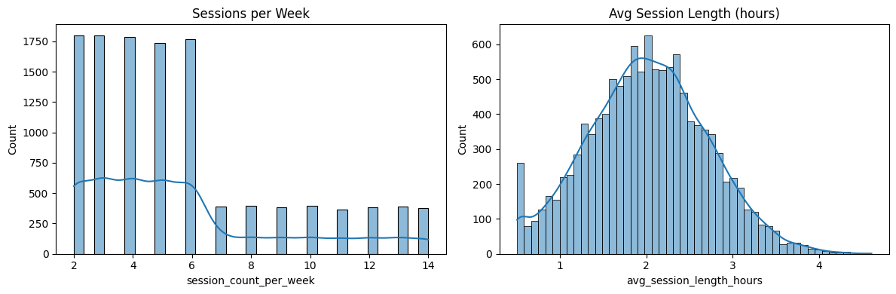
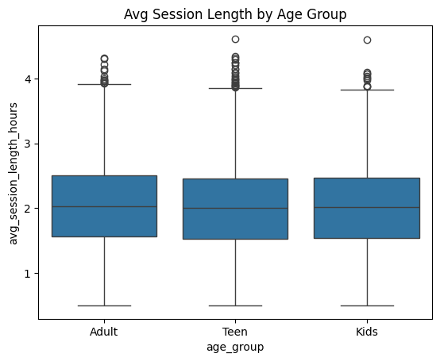
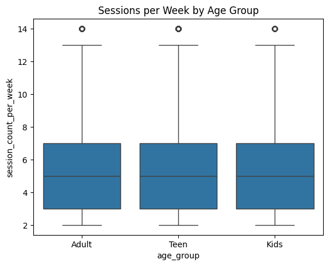
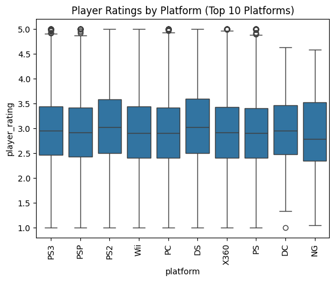
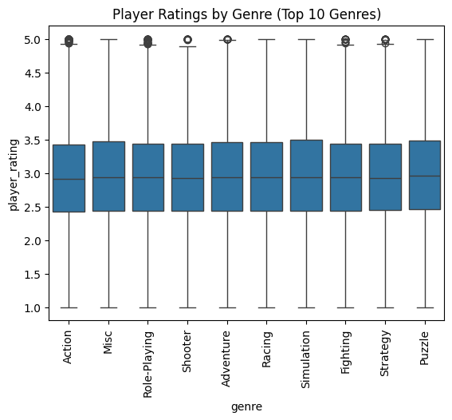
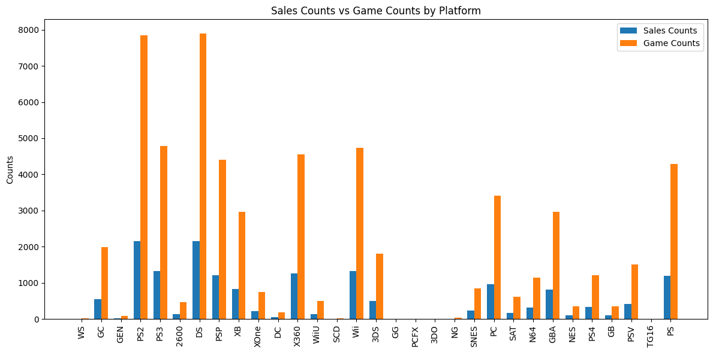
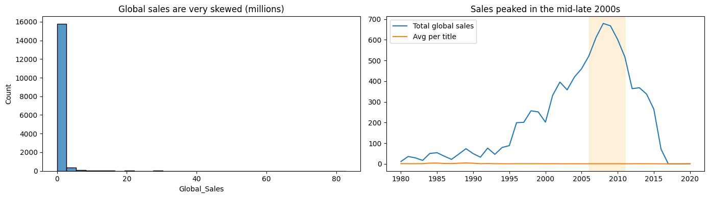
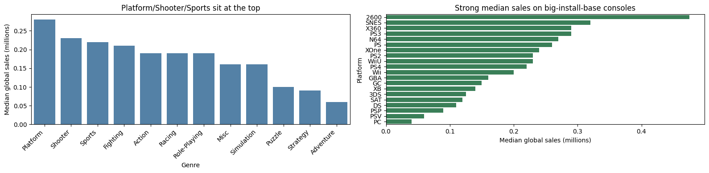
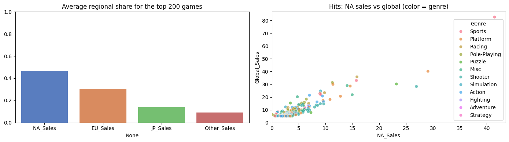

import pandas as pd
import numpy as np
import seaborn as sns
import matplotlib.pyplot as plt
from pathlib import Path
from surprise import Dataset, Reader, SVD
from surprise.model_selection import cross_validate
from collections import defaultdict
import json
import randomExploratory Data Analysis
This notebook loads and explores the three CSVs in data/ for basic structure, missingness, distributions, and quick cross-tabs.
data_dir = Path("..") / "data"
players_path = data_dir / "players.csv"
player_games_path = data_dir / "player_games.csv"
vgsales_path = data_dir / "vgsales.csv"
players = pd.read_csv(players_path)
player_games = pd.read_csv(player_games_path)
vgsales = pd.read_csv(vgsales_path)
players.shape, player_games.shape, vgsales.shape((11959, 6), (59795, 9), (16598, 11))Players
- This data set was synthetically generated.
# Looking at the players dataset.
players.info()<class 'pandas.core.frame.DataFrame'>
RangeIndex: 11959 entries, 0 to 11958
Data columns (total 6 columns):
# Column Non-Null Count Dtype
--- ------ -------------- -----
0 user_id 11959 non-null int64
1 age_group 11959 non-null object
2 session_count_per_week 11959 non-null int64
3 avg_session_length_hours 11959 non-null float64
4 primary_genre 11959 non-null object
5 preferred_platform 11959 non-null object
dtypes: float64(1), int64(2), object(3)
memory usage: 560.7+ KBplayers.describe()| user_id | session_count_per_week | avg_session_length_hours | |
|---|---|---|---|
| count | 11959.000000 | 11959.000000 | 11959.000000 |
| mean | 5980.000000 | 5.649218 | 2.014694 |
| std | 3452.410269 | 3.296081 | 0.691597 |
| min | 1.000000 | 2.000000 | 0.500000 |
| 25% | 2990.500000 | 3.000000 | 1.540000 |
| 50% | 5980.000000 | 5.000000 | 2.010000 |
| 75% | 8969.500000 | 7.000000 | 2.480000 |
| max | 11959.000000 | 14.000000 | 4.610000 |
# How many players are in each age group?
players['age_group'].value_counts()age_group
Teen 5924
Adult 3646
Kids 2389
Name: count, dtype: int64# Based off of age group, what are some statistics for number of sessions per week and average session length?
players.groupby('age_group')[['session_count_per_week', 'avg_session_length_hours']].agg(['mean','median','min','max'])| session_count_per_week | avg_session_length_hours | |||||||
|---|---|---|---|---|---|---|---|---|
| mean | median | min | max | mean | median | min | max | |
| age_group | ||||||||
| Adult | 5.702414 | 5.0 | 2 | 14 | 2.026676 | 2.03 | 0.5 | 4.32 |
| Kids | 5.687317 | 5.0 | 2 | 14 | 2.011875 | 2.01 | 0.5 | 4.60 |
| Teen | 5.601114 | 5.0 | 2 | 14 | 2.008455 | 2.00 | 0.5 | 4.61 |
# Looking at the distribution of session counts and average session lengths.
fig, axes = plt.subplots(1, 2, figsize=(12,4))
sns.histplot(players['session_count_per_week'], kde=True, ax=axes[0])
axes[0].set_title('Sessions per Week')
sns.histplot(players['avg_session_length_hours'], kde=True, ax=axes[1])
axes[1].set_title('Avg Session Length (hours)')
plt.tight_layout()
# Visualizing session length by age group
sns.boxplot(x='age_group', y='avg_session_length_hours', data=players)
plt.title('Avg Session Length by Age Group')
plt.show()
# Visualizing session count per week by age group
# The player_gen tool didn't randomize this column well, but a real-world dataset would probably have more variation.
sns.boxplot(x='age_group', y='session_count_per_week', data=players)
plt.title('Sessions per Week by Age Group')
plt.show()
Player Games
- This data set was synthetically generated, but I still want to explore it.
player_games.info()<class 'pandas.core.frame.DataFrame'>
RangeIndex: 59795 entries, 0 to 59794
Data columns (total 9 columns):
# Column Non-Null Count Dtype
--- ------ -------------- -----
0 user_id 59795 non-null int64
1 game_title 59795 non-null object
2 platform 59795 non-null object
3 genre 59795 non-null object
4 release_year 58812 non-null float64
5 publisher 59584 non-null object
6 global_sales 59795 non-null float64
7 playtime_hours 59795 non-null float64
8 player_rating 59795 non-null float64
dtypes: float64(4), int64(1), object(4)
memory usage: 4.1+ MBplayer_games.describe()| user_id | release_year | global_sales | playtime_hours | player_rating | |
|---|---|---|---|---|---|
| count | 59795.00000 | 58812.000000 | 59795.000000 | 59795.000000 | 59795.000000 |
| mean | 5980.00000 | 2006.424641 | 0.537874 | 6.042779 | 2.949367 |
| std | 3452.29479 | 5.806611 | 1.614241 | 4.456615 | 0.753637 |
| min | 1.00000 | 1980.000000 | 0.010000 | 0.500000 | 1.000000 |
| 25% | 2990.00000 | 2003.000000 | 0.060000 | 3.458654 | 2.430000 |
| 50% | 5980.00000 | 2007.000000 | 0.170000 | 5.277986 | 2.930000 |
| 75% | 8970.00000 | 2010.000000 | 0.470000 | 7.266400 | 3.450000 |
| max | 11959.00000 | 2020.000000 | 82.740000 | 40.703874 | 5.000000 |
# How many unique platforms, game titles, genres, and release years are there?
player_games[['platform', 'game_title', 'genre','release_year']].nunique()platform 31
game_title 11492
genre 12
release_year 39
dtype: int64# How many games are there per platform?
player_games['platform'].value_counts()
# Definitely skewed towards more modern gaming in this dataset.
# Especially DS titles - that's mostly Nintendo handheld games.platform
DS 7891
PS2 7841
PS3 4790
Wii 4741
X360 4549
PSP 4403
PS 4286
PC 3416
XB 2969
GBA 2966
GC 1992
3DS 1808
PSV 1513
PS4 1206
N64 1142
SNES 846
XOne 756
SAT 618
WiiU 506
2600 466
GB 354
NES 353
DC 180
GEN 94
NG 44
SCD 21
WS 20
3DO 10
TG16 7
PCFX 4
GG 3
Name: count, dtype: int64# How mnay games are there per genre?
player_games['genre'].value_counts()
# Most games are Action or Sports.
# There are quite a lot of "Misc" games too - not sure what those are.genre
Action 11970
Sports 8490
Misc 6290
Role-Playing 5410
Shooter 4675
Adventure 4675
Racing 4530
Platform 3180
Simulation 3055
Fighting 2980
Strategy 2425
Puzzle 2115
Name: count, dtype: int64# Looking at examples of games of the "Misc" genre
player_games[player_games['genre'] == 'Misc'].head(n=100)| user_id | game_title | platform | genre | release_year | publisher | global_sales | playtime_hours | player_rating | |
|---|---|---|---|---|---|---|---|---|---|
| 16985 | 3398 | Wii Play | Wii | Misc | 2006.0 | Nintendo | 29.02 | 5.869957 | 1.66 |
| 16986 | 3398 | Jampack Spring 2004 (RP-T) | PS2 | Misc | 2003.0 | Sony Computer Entertainment | 0.41 | 6.299864 | 2.18 |
| 16987 | 3398 | Codename: Kids Next Door: Game Boy Advance Vid... | GBA | Misc | 2004.0 | NaN | 0.17 | 4.623501 | 3.43 |
| 16988 | 3398 | Rock Band Track Pack: Classic Rock | X360 | Misc | 2009.0 | MTV Games | 0.07 | 6.101976 | 1.45 |
| 16989 | 3398 | You Don't Know Jack | PC | Misc | 1995.0 | Vivendi Games | 0.02 | 6.753385 | 2.00 |
| ... | ... | ... | ... | ... | ... | ... | ... | ... | ... |
| 17080 | 3417 | Mario Party DS | DS | Misc | 2007.0 | Nintendo | 9.02 | 13.767694 | 3.11 |
| 17081 | 3417 | SpongeBob SquigglePants | Wii | Misc | 2011.0 | THQ | 0.41 | 4.341520 | 2.73 |
| 17082 | 3417 | Bomberman Land | Wii | Misc | 2007.0 | Rising Star Games | 0.17 | 7.013869 | 2.44 |
| 17083 | 3417 | My Dress-Up | DS | Misc | 2008.0 | Oxygen Interactive | 0.07 | 20.540851 | 4.09 |
| 17084 | 3417 | Utawarerumono: Futari no Hakuoro | PS3 | Misc | 2016.0 | Aqua Plus | 0.01 | 0.500000 | 3.13 |
100 rows × 9 columns
# What genre do these games have from the sales dataset?
vgsales[vgsales['Name'].isin(player_games[player_games['genre'] == 'Misc']['game_title'].unique())][['Name','Genre']].drop_duplicates().head(n=100)
# Yep, seems like the "Misc" genre in player_games corresponds to those titles in the sales dataset too.
# It's interesting, because I see "Minecraft" here, which is usually classified as Sandbox or Survival.
# I guess "Misc" is just a catch-all for games that don't fit neatly into other categories defined in the data set for now.
# For future projects, I'd probably try to refine these genre labels a bit more.| Name | Genre | |
|---|---|---|
| 7 | Wii Play | Misc |
| 15 | Kinect Adventures! | Misc |
| 19 | Brain Age: Train Your Brain in Minutes a Day | Misc |
| 60 | Just Dance 3 | Misc |
| 68 | Just Dance 2 | Misc |
| ... | ... | ... |
| 1324 | 4 Nin uchi Mahjong | Misc |
| 1327 | Namco Museum 64 | Misc |
| 1331 | My Word Coach | Misc |
| 1332 | Hello Kitty Party | Misc |
| 1333 | SingStar Pop | Misc |
100 rows × 2 columns
# How many games are there for each combination of platform and genre?
player_games[['platform','genre']].value_counts()platform genre
PS2 Sports 1451
DS Misc 1442
PS3 Action 1355
PS2 Action 1285
DS Action 1242
...
GEN Racing 3
NG Sports 3
TG16 Shooter 3
GB Shooter 3
3DO Adventure 3
Name: count, Length: 293, dtype: int64# Which platforms have the highest average playtime hours?
player_games.groupby('platform')['playtime_hours'].mean().sort_values(ascending=False)platform
DS 7.142651
PS2 7.140786
PS3 6.039137
Wii 6.033498
X360 5.997810
PCFX 5.865911
PS 5.850155
GG 5.843280
PSP 5.814726
PC 5.671329
XB 5.660967
GEN 5.485984
GBA 5.337448
GC 5.295808
SAT 5.219366
3DS 5.205030
DC 5.135836
GB 5.128663
WiiU 5.127961
PSV 5.107586
SNES 5.101761
NG 5.098376
NES 5.089675
TG16 5.087840
XOne 5.063003
PS4 5.059669
N64 5.058548
2600 5.043160
SCD 4.920850
WS 4.576416
3DO 4.169893
Name: playtime_hours, dtype: float64# Which platform has the best player ratings on average?
player_games.groupby('platform')['player_rating'].mean().sort_values(ascending=False)platform
DS 3.063155
PS2 3.049054
PS3 2.965046
DC 2.940500
X360 2.935645
PSP 2.932819
Wii 2.928920
PC 2.919836
NG 2.918636
PS 2.916864
XOne 2.899193
SAT 2.894806
XB 2.893378
GBA 2.893014
GB 2.892825
PSV 2.891514
WS 2.891500
SCD 2.889524
2600 2.884356
SNES 2.881785
PS4 2.875763
WiiU 2.873458
N64 2.872916
GC 2.859247
3DS 2.836289
NES 2.814476
TG16 2.765714
GEN 2.747872
GG 2.573333
3DO 2.408000
PCFX 1.942500
Name: player_rating, dtype: float64# Looking at a box plot of platform and player rating
# I'll sort by the top 10 platforms by average player rating for better visualization.
top_platforms = player_games.groupby('platform')['player_rating'].mean().sort_values(ascending=False).head(10).index
sns.boxplot(x='platform', y='player_rating', data=player_games[player_games['platform'].isin(top_platforms)])
plt.title('Player Ratings by Platform (Top 10 Platforms)')
plt.xticks(rotation=90)
plt.show()
# Which genre has the highest average player rating?
player_games.groupby('genre')['player_rating'].mean().sort_values(ascending=False)genre
Puzzle 2.989660
Simulation 2.971018
Misc 2.967781
Adventure 2.960518
Strategy 2.958082
Racing 2.957172
Role-Playing 2.952353
Fighting 2.944638
Shooter 2.942135
Action 2.936865
Sports 2.935706
Platform 2.924698
Name: player_rating, dtype: float64# Looking at a box plot of genre and player rating
# Similar to the last boxplot, I'll grab the top 10 genres here
top_genres = player_games.groupby('genre')['player_rating'].mean().sort_values(ascending=False).head(10).index
sns.boxplot(x='genre', y='player_rating', data=player_games[player_games['genre'].isin(top_genres)])
plt.title('Player Ratings by Genre (Top 10 Genres)')
plt.xticks(rotation=90)
plt.show()
Video Game Sales
vgsales.info()<class 'pandas.core.frame.DataFrame'>
RangeIndex: 16598 entries, 0 to 16597
Data columns (total 11 columns):
# Column Non-Null Count Dtype
--- ------ -------------- -----
0 Rank 16598 non-null int64
1 Name 16598 non-null object
2 Platform 16598 non-null object
3 Year 16327 non-null float64
4 Genre 16598 non-null object
5 Publisher 16540 non-null object
6 NA_Sales 16598 non-null float64
7 EU_Sales 16598 non-null float64
8 JP_Sales 16598 non-null float64
9 Other_Sales 16598 non-null float64
10 Global_Sales 16598 non-null float64
dtypes: float64(6), int64(1), object(4)
memory usage: 1.4+ MB# Do we have any missing values in the sales dataset?
vgsales.isna().sum()Rank 0
Name 0
Platform 0
Year 271
Genre 0
Publisher 58
NA_Sales 0
EU_Sales 0
JP_Sales 0
Other_Sales 0
Global_Sales 0
dtype: int64vgsales.describe(include='all')| Rank | Name | Platform | Year | Genre | Publisher | NA_Sales | EU_Sales | JP_Sales | Other_Sales | Global_Sales | |
|---|---|---|---|---|---|---|---|---|---|---|---|
| count | 16598.000000 | 16598 | 16598 | 16327.000000 | 16598 | 16540 | 16598.000000 | 16598.000000 | 16598.000000 | 16598.000000 | 16598.000000 |
| unique | NaN | 11493 | 31 | NaN | 12 | 578 | NaN | NaN | NaN | NaN | NaN |
| top | NaN | Need for Speed: Most Wanted | DS | NaN | Action | Electronic Arts | NaN | NaN | NaN | NaN | NaN |
| freq | NaN | 12 | 2163 | NaN | 3316 | 1351 | NaN | NaN | NaN | NaN | NaN |
| mean | 8300.605254 | NaN | NaN | 2006.406443 | NaN | NaN | 0.264667 | 0.146652 | 0.077782 | 0.048063 | 0.537441 |
| std | 4791.853933 | NaN | NaN | 5.828981 | NaN | NaN | 0.816683 | 0.505351 | 0.309291 | 0.188588 | 1.555028 |
| min | 1.000000 | NaN | NaN | 1980.000000 | NaN | NaN | 0.000000 | 0.000000 | 0.000000 | 0.000000 | 0.010000 |
| 25% | 4151.250000 | NaN | NaN | 2003.000000 | NaN | NaN | 0.000000 | 0.000000 | 0.000000 | 0.000000 | 0.060000 |
| 50% | 8300.500000 | NaN | NaN | 2007.000000 | NaN | NaN | 0.080000 | 0.020000 | 0.000000 | 0.010000 | 0.170000 |
| 75% | 12449.750000 | NaN | NaN | 2010.000000 | NaN | NaN | 0.240000 | 0.110000 | 0.040000 | 0.040000 | 0.470000 |
| max | 16600.000000 | NaN | NaN | 2020.000000 | NaN | NaN | 41.490000 | 29.020000 | 10.220000 | 10.570000 | 82.740000 |
# How many sales per platform?
vgsales['Platform'].value_counts()Platform
DS 2163
PS2 2161
PS3 1329
Wii 1325
X360 1265
PSP 1213
PS 1196
PC 960
XB 824
GBA 822
GC 556
3DS 509
PSV 413
PS4 336
N64 319
SNES 239
XOne 213
SAT 173
WiiU 143
2600 133
NES 98
GB 98
DC 52
GEN 27
NG 12
SCD 6
WS 6
3DO 3
TG16 2
GG 1
PCFX 1
Name: count, dtype: int64# Do the sales per platform align with the number of games played per platform in the player_games dataset?
platform_sales_counts = vgsales['Platform'].value_counts()
platform_game_counts = player_games['platform'].value_counts()
# Visualizing the two distributions side by side
platforms = set(platform_sales_counts.index).union(set(platform_game_counts.index))
sales_counts = [platform_sales_counts.get(platform, 0) for platform in platforms]
game_counts = [platform_game_counts.get(platform, 0) for platform in platforms]
x = np.arange(len(platforms))
width = 0.35
fig, ax = plt.subplots(figsize=(12,6))
bars1 = ax.bar(x - width/2, sales_counts, width, label='Sales Counts')
bars2 = ax.bar(x + width/2, game_counts, width, label='Game Counts')
ax.set_xticks(x)
ax.set_xticklabels(platforms, rotation=90)
ax.set_ylabel('Counts')
ax.set_title('Sales Counts vs Game Counts by Platform')
ax.legend()
plt.tight_layout()
plt.show()
# Yep, I'd say there is a trend.
# Games that had more sales have more play records in the player_games dataset.
# How many sales per genre?
vgsales['Genre'].value_counts()Genre
Action 3316
Sports 2346
Misc 1739
Role-Playing 1488
Shooter 1310
Adventure 1286
Racing 1249
Platform 886
Simulation 867
Fighting 848
Strategy 681
Puzzle 582
Name: count, dtype: int64Summary of EDA and Preprocessing Work
- Loaded three datasets from
data/(players,player_games,vgsales). - Explored each dataset:
info(),describe(), value counts, grouped stats and several plots.
Part 1: Recommendation System with Surprise
- Answering part 1 of the final project, which is to recommend games to players based on their past play history. For simplicity, I’ll use collaborative filtering with the
Surpriselibrary using ratings derived from players.
# First, I need to filter down to a data frame with three columns for this model:
# UserID, Game Title, and user rating.
# The player_games csv has those three columns, so I'll go ahead and grab it.
model_df = pd.read_csv("../data/player_games.csv")
cols_to_keep = ['user_id', 'game_title', 'player_rating']
rating_df = model_df[cols_to_keep]# Using surprise
reader = Reader(rating_scale=(1.0, 5.0))
data = Dataset.load_from_df(rating_df, reader)
algo = SVD()
# Run 5-fold cross-validation and print results
cross_validate(algo, data, measures=["RMSE", "MAE"], cv=5, verbose=True)Evaluating RMSE, MAE of algorithm SVD on 5 split(s).
Fold 1 Fold 2 Fold 3 Fold 4 Fold 5 Mean Std
RMSE (testset) 0.7756 0.7684 0.7688 0.7815 0.7757 0.7740 0.0049
MAE (testset) 0.6186 0.6135 0.6134 0.6256 0.6175 0.6177 0.0045
Fit time 0.23 0.24 0.24 0.24 0.25 0.24 0.01
Test time 0.02 0.02 0.07 0.02 0.02 0.03 0.02 {'test_rmse': array([0.77561042, 0.76841783, 0.7687912 , 0.78150812, 0.77565621]),
'test_mae': array([0.6186215 , 0.61352798, 0.61336035, 0.62561748, 0.6175117 ]),
'fit_time': (0.2341620922088623,
0.24496197700500488,
0.23569416999816895,
0.23739290237426758,
0.2491130828857422),
'test_time': (0.021291017532348633,
0.019502878189086914,
0.06631183624267578,
0.01961803436279297,
0.020987987518310547)}
def get_top_n(predictions, n=10):
"""Return the top-N recommendation for each user from a set of predictions.
Args:
predictions(list of Prediction objects): The list of predictions, as
returned by the test method of an algorithm.
n(int): The number of recommendation to output for each user. Default
is 10.
Returns:
A dict where keys are user (raw) ids and values are lists of tuples:
[(raw item id, rating estimation), ...] of size n.
"""
# First map the predictions to each user.
top_n = defaultdict(list)
for uid, iid, true_r, est, _ in predictions:
top_n[uid].append((iid, est))
# Then sort the predictions for each user and retrieve the k highest ones.
for uid, user_ratings in top_n.items():
user_ratings.sort(key=lambda x: x[1], reverse=True)
top_n[uid] = user_ratings[:n]
return top_n# Train the model on the full dataset
print("Training the model on the full dataset...")
trainset = data.build_full_trainset()
algo.fit(trainset)
print("Model trained.")
# Predict ratings for all pairs that are not in the training set.
print("Generating recommendations...")
testset = trainset.build_anti_testset()
predictions = algo.test(testset)
print("Recommendations generated.")
print("Getting the top 5 recommendations for each user...")
top_n = get_top_n(predictions,n=5)
# Print the recommended items for each user
for uid, user_ratings in top_n.items():
print(f"User {uid}:")
for (iid, est) in user_ratings:
print(f" Game: {iid}, Estimated Rating: {est:0.2f}")
print()Training the model on the full dataset...
Model trained.
Generating recommendations...
Recommendations generated.
Getting the top 5 recommendations for each user...
Selected sample users: [8900, 7966, 11234, 3462, 1652, 251, 5261, 7181, 7910, 1762]--------------------------------------------------------------------------- FileNotFoundError Traceback (most recent call last) Cell In[64], line 33 25 sample_rows.append({ 26 "user_id": uid, 27 "game_id": iid, 28 "est_rating": float(est) 29 }) 31 output_path = Path("data/sample_recommendations.json") ---> 33 with open(output_path, "w") as f: 34 json.dump(sample_rows, f, indent=4) 36 print(f"Exported sample recommendations to {output_path.resolve()}") File ~/Library/Python/3.12/lib/python/site-packages/IPython/core/interactiveshell.py:324, in _modified_open(file, *args, **kwargs) 317 if file in {0, 1, 2}: 318 raise ValueError( 319 f"IPython won't let you open fd={file} by default " 320 "as it is likely to crash IPython. If you know what you are doing, " 321 "you can use builtins' open." 322 ) --> 324 return io_open(file, *args, **kwargs) FileNotFoundError: [Errno 2] No such file or directory: 'data/sample_recommendations.json'
# Exporting a sample of recommendations to JSON
all_users = list(top_n.keys())
sample_users = random.sample(all_users, 10)
print(f"Selected sample users: {sample_users}")
sample_rows = []
for uid in sample_users:
for (iid, est) in top_n[uid]:
sample_rows.append({
"user_id": uid,
"game_id": iid,
"est_rating": float(est)
})
output_path = Path("../data/sample_recommendations.json")
with open(output_path, "w") as f:
json.dump(sample_rows, f, indent=4)
print(f"Exported sample recommendations to {output_path.resolve()}")Selected sample users: [3053, 9587, 9522, 9967, 11164, 4542, 10886, 1164, 10827, 5957]
Exported sample recommendations to /Users/zenful/School/INFO523/final-project-spencer-atchley-solo/data/sample_recommendations.jsonPart 2: Which factors influence a game’s global sales performance?
Short, EDA-only pass with small steps and conversational notes.
Game plan
- Clean the year field and sanity-check the sales columns.
- Look at when sales peaked and how skewed the distribution is.
- Compare medians by genre and platform (with a minimum title count to avoid tiny samples).
- See which publishers dominate totals.
- Peek at regional mix for the biggest hits.
# Start with a clean copy and fix Year.
sales = vgsales.copy()
sales['Year'] = pd.to_numeric(sales['Year'], errors='coerce')
missing_year = sales['Year'].isna().sum()
sales_clean = sales.dropna(subset=['Year']).assign(Year=lambda df: df['Year'].astype(int))
print(f'Rows with missing Year dropped: {missing_year}')
sales_clean[['Global_Sales','NA_Sales','EU_Sales','JP_Sales','Other_Sales']].describe()Rows with missing Year dropped: 271| Global_Sales | NA_Sales | EU_Sales | JP_Sales | Other_Sales | |
|---|---|---|---|---|---|
| count | 16327.00 | 16327.00 | 16327.00 | 16327.00 | 16327.00 |
| mean | 0.54 | 0.27 | 0.15 | 0.08 | 0.05 |
| std | 1.57 | 0.82 | 0.51 | 0.31 | 0.19 |
| min | 0.01 | 0.00 | 0.00 | 0.00 | 0.00 |
| 25% | 0.06 | 0.00 | 0.00 | 0.00 | 0.00 |
| 50% | 0.17 | 0.08 | 0.02 | 0.00 | 0.01 |
| 75% | 0.48 | 0.24 | 0.11 | 0.04 | 0.04 |
| max | 82.74 | 41.49 | 29.02 | 10.22 | 10.57 |
# Let's peek at the sales distribution and how totals moved over time.
fig, axes = plt.subplots(1, 2, figsize=(14,4))
sns.histplot(sales_clean['Global_Sales'], bins=30, ax=axes[0])
axes[0].set_title('Global sales are very skewed (millions)')
yearly = sales_clean.groupby('Year')['Global_Sales'].agg(total='sum', mean='mean')
axes[1].plot(yearly.index, yearly['total'], label='Total global sales')
axes[1].plot(yearly.index, yearly['mean'], label='Avg per title')
axes[1].axvspan(2006, 2011, color='orange', alpha=0.15)
axes[1].set_title('Sales peaked in the mid-late 2000s')
axes[1].legend()
plt.tight_layout()
# Which genres and platforms typically sell more? Use medians to soften the mega-hit effect.
genre_medians = sales_clean.groupby('Genre')['Global_Sales'].median().sort_values(ascending=False)
platform_medians = (sales_clean
.groupby('Platform')
.agg(median_sales=('Global_Sales','median'), count=('Name','size'))
.query('count >= 100') # keep platforms with real catalogs
.sort_values('median_sales', ascending=False)
)
fig, axes = plt.subplots(1, 2, figsize=(16,4))
sns.barplot(x=genre_medians.index, y=genre_medians.values, color='steelblue', ax=axes[0])
axes[0].set_xticklabels(axes[0].get_xticklabels(), rotation=45, ha='right')
axes[0].set_ylabel('Median global sales (millions)')
axes[0].set_title('Platform/Shooter/Sports sit at the top')
sns.barplot(y=platform_medians.index, x=platform_medians['median_sales'], color='seagreen', ax=axes[1])
axes[1].set_xlabel('Median global sales (millions)')
axes[1].set_title('Strong median sales on big-install-base consoles')
plt.tight_layout()/var/folders/ps/dp2pv5c94mgd208r06lxs13r0000gn/T/ipykernel_1947/1744094321.py:11: UserWarning: set_ticklabels() should only be used with a fixed number of ticks, i.e. after set_ticks() or using a FixedLocator.
axes[0].set_xticklabels(axes[0].get_xticklabels(), rotation=45, ha='right')
# Who moves the most units in aggregate?
publisher_totals = sales_clean.groupby('Publisher')['Global_Sales'].sum().sort_values(ascending=False).head(12)
plt.figure(figsize=(8,5))
sns.barplot(y=publisher_totals.index, x=publisher_totals.values, palette='Blues_r')
plt.title('Publishers with the largest cumulative global sales')
plt.xlabel('Total sales (millions)')
plt.tight_layout()/var/folders/ps/dp2pv5c94mgd208r06lxs13r0000gn/T/ipykernel_1947/17215465.py:4: FutureWarning:
Passing `palette` without assigning `hue` is deprecated and will be removed in v0.14.0. Assign the `y` variable to `hue` and set `legend=False` for the same effect.
sns.barplot(y=publisher_totals.index, x=publisher_totals.values, palette='Blues_r')
# How do the biggest hits split by region?
top_hits = sales_clean.sort_values('Global_Sales', ascending=False).head(200)
region_cols = ['NA_Sales','EU_Sales','JP_Sales','Other_Sales']
region_share = top_hits[region_cols].div(top_hits['Global_Sales'], axis=0)
share_mean = region_share.mean().sort_values(ascending=False)
fig, axes = plt.subplots(1, 2, figsize=(14,4))
sns.barplot(x=share_mean.index, y=share_mean.values, ax=axes[0], palette='muted')
axes[0].set_ylim(0,1)
axes[0].set_title('Average regional share for the top 200 games')
sns.scatterplot(data=top_hits, x='NA_Sales', y='Global_Sales', hue='Genre', ax=axes[1], alpha=0.7)
axes[1].set_title('Hits: NA sales vs global (color = genre)')
axes[1].set_xlim(0, top_hits['NA_Sales'].max()*1.05)
axes[1].set_ylim(0, top_hits['Global_Sales'].max()*1.05)
plt.tight_layout()/var/folders/ps/dp2pv5c94mgd208r06lxs13r0000gn/T/ipykernel_1947/2769122408.py:7: FutureWarning:
Passing `palette` without assigning `hue` is deprecated and will be removed in v0.14.0. Assign the `x` variable to `hue` and set `legend=False` for the same effect.
sns.barplot(x=share_mean.index, y=share_mean.values, ax=axes[0], palette='muted')
Key takeaways
- Sales are highly skewed; a small set of blockbusters dominates volume.
- Global totals (and per-title averages) peak around 2006–2011, then taper off.
- This could be due to data incompleteness for more recent years, or a real trend.
- Platform, Shooter, and Sports games post the highest medians.
- Nintendo, EA, and Activision lead cumulative sales.
- For the biggest 200 games, NA and EU carry the bulk of global revenue; Japan is meaningful but smaller.